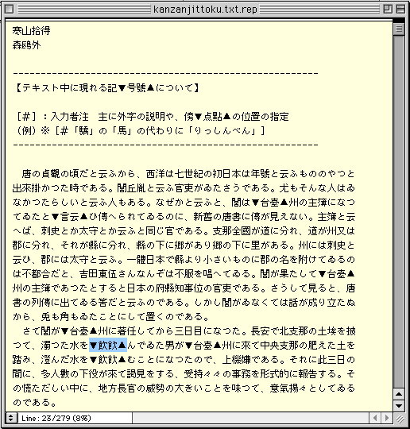
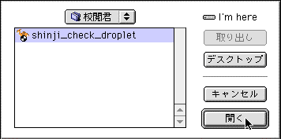
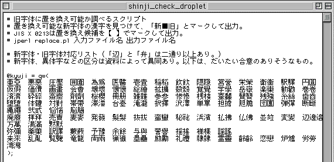
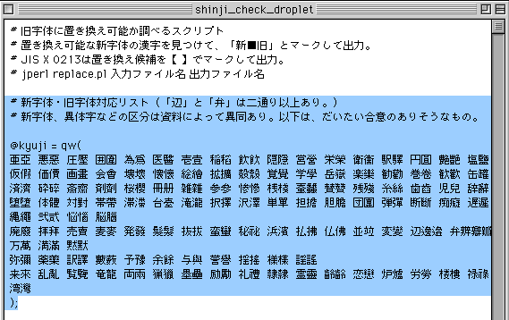
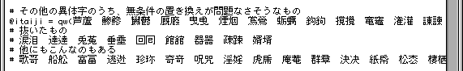
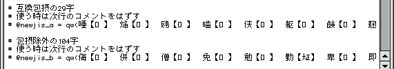
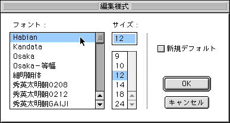
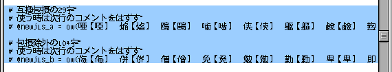
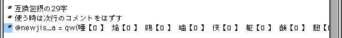

校閲君に親しもう Macintosh版
校閲君は、Perlという言語で作られたプログラムです。
Perl言語を組み込めば、インターネット経由でオンライン版にアクセスしなくても、手許のマシンで校閲君が使えます。
プログラムの中味をのぞいて、校閲君の手順を確認したり、必要に応じてプログラムを書き換え、機能に変更を加えることも可能です。
校閲君を手許のパソコンで使うためには、Perl言語と校閲君のプログラムの双方を、そろえておくことが必要です。
Macintosh用の日本語対応Perlは、MacJperlと名付けられています。
「猫に真珠」の「最初の一歩 ―ともあれ動かしてみよう―」、「(1) インストールする」の指示に従って、MacJperlを導入してください。
続いてこちらからMacintosh用の校閲君を引き落としてください。
Macintosh用の校閲君は、StuffIt形式で圧縮された状態（ファイル名は、「shinji_check_droplet.sit」）でダウンロードされます。
StuffIt Expanderがインストールしてあれば、自動的に解凍され、富士山にラクダのマーク、ファイル名「shinji_check_droplet」のアイコンが現れるはずです。
Macintoshでは、チェックするファイルをアイコンにドラッグ＆ドロップすると、校閲君が新字、俗字を洗い出します。
手許に適当な旧字のファイルがなければ、ここでも森鴎外の「寒山拾得」（kanzanjittoku.txt）を使ってみましょう。
チェックするファイルを校閲君にドロップすると、同じ場所（同じフォールダー内、元ファイルをFinderに置いていた場合はFinder上）に、検査結果を書き込んだファイルが、白紙のアイコンの形で新しく作られます。
もともとのファイル名の後ろに、「.rep」と付いているのを確認してください。
「kanzanjittoku.txt」をドロップすると、「kanzanjittoku.txt.rep」ができているはずです。
いつも使っているエディターで、「.rep」の付いたチェック済みファイルを開いてみて下さい。

●Macintosh用校閲君のチェック結果。オンライン版と同様、▼の右がファイルに使用されている新字もしくは俗字。そのとなりに、代替候補の旧字もしくは正字。
校閲君が、何をどんなふうに見ているか、作業手順をのぞいてみましょう。
MacJPerlのアイコンをダブルクリックして、起動してください。
メニューの「ファイル」から「開く」を選びます。
ダイアログボックスで、校閲君（ファイル名は、「shinji_check_droplet」です。）を探して選択し、「開く」をクリックしてください。

●ここでは、あらかじめ「校閲君」というフォルダーを作り、そこに「shinji_check_droplet」をおさめておいた。解凍した校閲君をFinder上に置いていれば、「shinji_check_droplet」はそこで見つかる。
校閲君の中味が、以下のように表示されるでしょう。

1行目の、「# 旧字体に置き換え可能か調べるスクリプト」のように、頭に「#」のマークが付いているところはすべて、作者の大野裕さんが付した、コメントです。（コメントの部分は、プログラムとしては実行されません。）
ともかくコメントのところだけ、最初にざっと目を通してみてください。
次に、校閲君が何をしているか、上から順に確認していきましょう。

青く反転させているところは、新字と旧字の対応リストです。
二文字ずつ、漢字がペアになっているところの冒頭に、「亜亞」が並んでいます。
検査対象のファイルの中に新字の「亜」があると、校閲君は旧字の「亞」を添えて、「▼亜亞▲」の形で置換します。
次に、「# その他の異体字のうち、無条件の置き換えが問題なさそうなもの」を見ていきましょう。

「@itaiji = qw(」以下に示された、「芦蘆」からはじまる組み合わせが、チェックの対象となっているセットです。ここには、俗字（略字）と正字の組み合わせが並んでいます。
一方、「# 抜いたもの」には、チェックするべきか否か検討した結果、大野さんが「外そう」と決めたものが並んでいます。
しばらく校閲君を使ってみると、「この字のチェックは不要だな」と思われるものが出てくるかも知れません。
例えば、「@itaiji = qw(」から続く行の最後から二番目に入っている、「言云」に関しては、形が明らかに違っていて、入力時・校正時に不注意で見逃す可能性は低いはずだから、外しても良いかもしれません。
そうしたければ、「言云」を「# 抜いたもの」にうつします。
これで、「言」が「▼言云▲」に置き換えられることはなくなります。
「# 他にもこんなのもある」に置かれたものも、この状態ではチェックされません。
「# その他の置き換えリスト」以下には、現時点では発揮されていない、校閲君の秘められた力が組み込まれています。

「互換包摂の29字」と「包摂除外の104字」が何を意味するかは、【注意が必要な「包摂の扱いが変わる文字」】を参照してください。
あなたがMacJPerlの表示フォントを、KandataもしくはHabianに切り替えていなければ、置き換えの候補として示される文字は、上の図のように白抜きの□で示されているでしょう。
MacJPerlのメニューの「編集」から「編集様式」を選び、フォントをKandataもしくはHabianに切り替えると、下の図のように置き換えの候補として示される文字を確認できるようになります。


例えば「互換包摂の29字」をチェックさせたいときには、「# @newjis_a = qw(」の頭に付いている「#」を削除します。

コメントを意味する「#」が外れたことで、校閲君はこの部分もプログラムの一部であると解釈し、「# @newjis_a = qw(」以下のペアも処理するようになります。
「包摂除外の104字」をチェックさせたいときも、同様に「# @newjis_b = qw(」の頭の「# 」を削除してください。
旧字のファイルを、第3第4水準も使って作る場合には、「互換包摂の29字」と「包摂除外の104字」のチェックが必要です。
一方、青空文庫が現時点の標準的な作業手順としている、第1第2水準の範囲で作る場合には、この二種類のチェックは必要はありません。
（第3第4水準、Kandata、Habianなどは、かなり込み入った新しい話題です。これらの言葉を、あなたがこの文書ではじめてご覧になったのなら、意味が分からなくて当然です。「新JIS漢字時代の扉を開こう！」という文書で、平易を心がけてこれらについて説明していますので、参照してみてください。）
「# 一つの配列に」以下には、校閲君の処理の手順が記述されています。
Perlスクリプトの組み立て方には、ここでは立ち入りません。
興味のある方は、下に示した関連ページ、書籍などから、踏み込んでいってください。
・青空文庫メーリングリストに集うPerl諸賢、大野裕さん、結城浩さん、LUNA CATさんの尽力によって、校閲君をはじめ、さまざまな編集・校正支援ツールが開発されています。
・「新JIS漢字時代の扉を開こう！」の【注意が必要な「包摂の扱いが変わる文字」】で紹介している、結城浩さんによる「文字チェッカー」は、青空文庫に届けられたPerlからの最初の贈り物です。
・結城さんは、「青空文庫の応援ページ」を開いて、プログラム開発の側から、活動を支援してくださっています。
・大野裕さんは、青空文庫の活動を支援するさまざまなツールを、「プロ文工作員の道具箱」で公開されています。
・本来WindowsユーザーであるLUNA CATさんは、Macintosh向けのPerl情報が不足している現状を踏まえて、「猫に真珠(Perl)−−−青空文庫のためのMacPerl超入門−−−」を書いてくれました。このページの「番外編」にはWindowsで使えるプログラムの情報も整理されています。
・結城浩さんが、Perlによるプログラミングの入門書「Perl言語プログラミングレッスン 入門編」（ソフトバンク パブリッシング）を書かれました。
戻る。
目次にもどる。